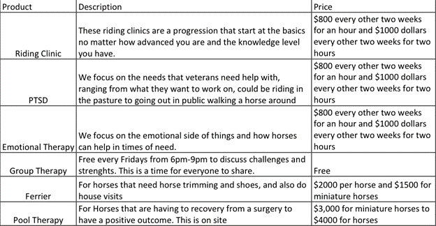

Type of Classes:
We here at Horses and Heroes offer a wide range of riding clinics, assisted therapy, emotional therapy, PTSD recovery steps, group therapy and the companion that every soldier needs, other services include ferrier, and pool therapy. Our company Horses and Heroes will give the guidance to make positive steps and make a larger and greater impact to our veterans and their families and other military personnel. We here at Horses and Heroes will also have journals detailed with progression from each client and their outcome. This will help us see where they are at in their time with us.

We are selling these because they all come at a price that is optimal for the owner of Horses and Heroes that is still affordable to the client. They can also go through the Vet and have the Vet pay us for their visits, we work hand in hand with the Vet.
We are a non-profit organization that helps out military veterns and military personnel.
We offer services and classes for everyone who walks their our barn doors.
@LLC Non-Profit Horses and Heroes